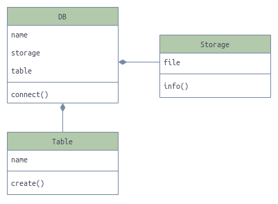
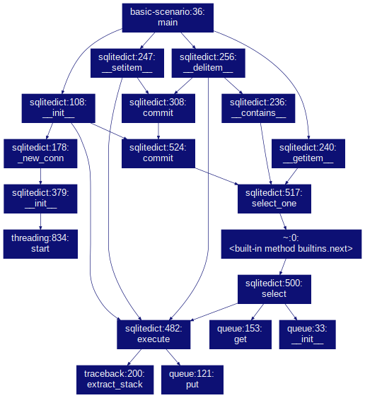
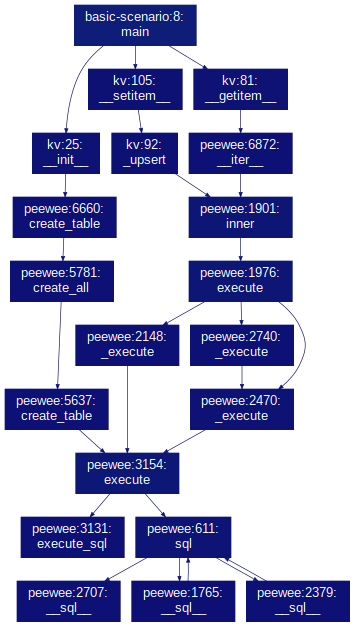

Рассмотрение абстракций, их взаимосвязей и сложности библиотек встраиваемых БД

Часто возникает желание иметь простейшую архитектуру сервиса или программы, в которой будут отсутствовать избыточные компоненты и межсетевое взаимодействие. Это ощутимо сокращает силы и время на их реализацию, поддержку и погружение. Чтобы придерживаться такого подхода нужно уметь подбирать подходящие технологии и библиотеки.
Подбор может быть достаточно прямолинейным - формирование списка подходящих решений по их применяемой области, но, очевидно, что такой список окажется слишком большим и перенасыщенным. Сегодня век информации и потому её объём вокруг нас огромен, который человек физически не способен усвоить даже за всю жизнь, да-да представь себе. Осознание этой проблемы объема естесвенным образом приводит к формированию интеллектуального подхода - применения ряда аналитических практик, приводящих к сокращению кол-ва информации, способной быть усвоенной человеком в сроки, соответствующие решаемой задачи, и сохранению уровня её качества, релевантности. Т.е. подход, сокращающий список подходящих решений без погружения в исходной код до приемлимого и, в конечном итоге, одного.
В данной статье применяется ряд таких практик, на примере подбора библиотек встраиваемых БД. Как таковая решаемая задача отсутствует, потому необходимости придти к выбору одной из них нету.
Цели
- Сформировать список библиотек встраиваемых БД к рассмотрению.
- Сформировать список аналитических практик.
- Определить инструменты по анализу исходного кода библиотек, лежащих в основе практик.
- Применить каждую практику отдельно по каждой БД из списка, описав полученные результаты.
Список БД
В список можно внести огромное кол-во разных вариаций библиотек, как упоминалось ранее, но мы сократим его до таковых, которые могут быть использованы на практике в будущем(тут конечно каждый сам для себя должен представить, что именно может быть ему полезным, на чем он специализируется или к чему хотел бы приблизиться в своей деятельности).
Помимо прочего, библиотеки должны быть написаны на чистом питоне для чтения исходного кода и технической возможности анализа вспомогательными инструментами. Основной источник для поиска - Github.
Возьмем за кол-во три библиотеки, как минимально показательное, учитывая, что полученной информации по ним будет в конечном итоге много.
Список практик
Приведем их список, применяемых для получения информации по каждой из библиотек, дающей как бы взгляд сверху на абстрактную сложность их внутреннего устройства без погружения в исходный код.
Перечисление практик идет в порядке от общего к частному, т.е. самая первая описывает общую картину с наименьшим кол-вом деталей и степенью погружения, при этом больше всех затрагивает высокоуровневые абстракции, на которых библиотеки базируются:
- Построение графа зависимостей модулей.
- Построение диаграммы классов.
- Построение графа вызовов базового исполняемого сценария. Эта практика наиболее близка к реальной эксплуатации библиотеки, т.к. содержит ряд её вызовов, без которых выполнямая повседневно реальная работа бессмыслена:
- Создание БД.
- Запись данных.
- Обновление данных.
- Получение, поиск данных.
- Удаление записи.
- Построение графика цикломатической сложности.
- Построение графика halstead-измерений и суммарных характеристик. Суммарные характеристики - взятые из предыдущих практик в дополнение к halstead-измерениям.
Вспомогательные инструменты
Перечислим инструменты с кратким описанием по каждому, чтобы в дальнейшем было понятно, для чего мы их используем и что от них ожидается.
Ресурс, содержащий поддерживаемый список инструментов по всевозможному анализу кода.
Pyreverse
https://www.logilab.org/blogentry/6883
Pyreverse analyses Python code and extracts UML class diagrams and package depenndencies.
Утилита является частью пакета pylint. Как видно из цитаты, автоматически строит диаграммы классов. Эти диаграммы дадут нам видение абстракций, которые содержит БД, и их взаимосвязей. При этом утилита позволяет указывать уровень глубины сканирования исходного кода.
Pydeps
https://github.com/thebjorn/pydeps.
Утилита построения графа зависимостей с генерацией на осное формата .dot программного пакета Graphviz. Изображение графа генерируется разными цветами, логика в этом присутствует, но для нас она значения не имеет, поэтому не стоит обращать на это внимание.
Gprof2dot
https://github.com/jrfonseca/gprof2dot
Утилита строит граф вызовов указанного исполняемого сценария, поэтому необходимо в нем иметь вызовы оптимального кол-ва базовых абстракций библиотеки. Строится из файла формата .pstats стандартной библиотеки Stats. В дополнение к ней нужно иметь предустановленный программный пакет GraphViz и в частности утилиту dot.
Radon
https://radon.readthedocs.io/en/latest/
Утилита сканирует исходный код и выводит показатели следующих измерений:
- Cyclomatic Complexity (i.e. McCabe’s Complexity)
- Halstead metrics
McCabe
https://github.com/pycqa/mccabe
Утилита в дополнение к radon генерирует граф в текстовом формате dot по которому можно сгенерировать отображение его прохождения потоком управления.
Рассмотрение
Построение графа зависимостей
На графах не отображаются модули стандартной библиотеки, а только лишь внешние зависимости. Сам сканируемый пакет отображается в именованных прямоугольных рамках, очерчивающих его модули, отображаемые окружностями. Внешние зависимости отображаются в виде изображений папок с их именами.
Такой граф дает визуальное представление полной картины того, как исходный код структурирован, какие верхнеуровневые компоненты содержит и как они взаимосвязаны.
TinyDB
pydeps --noshow --cluster --keep-target-cluster --rmprefix tinydb. -T png -o deps.png venv/lib/python3.8/site-packages/tinydb
Вот первое отображение структуры компонентов из которых собрана библиотека. Слева основной импортируемый модуль, который вбирает функционал остальных, что видно по направленным стрелкам-связям.
Sqlitedict
Библиотека не имеет никаких зависимостей и даже не скомпанована как пакет, все абстракции содержатся в одном модуле в 550 строк кода и их всего 2, одна из которых основная, верхнеуровневая. Это сразу знак того, что порог входа по изучению нулевой.
Казалось бы сказать тут нечего, но это косвенно и обозначает преимущество.
Peewee-kv
Фактически это модуль пакета playhouse который расширением функционала реализованного в библиотеке peewee.
pydeps --include-missing --max-bacon=1 --noshow --cluster --keep-target-cluster --rmprefix playhouse. -T png -o source-deps.png venv/lib/python3.8/site-packages/playhouse
Команда генерирует взаимосвязи модулей из сканируемого пакета которые нас не интересуют. поэтому следующее изображение отредактировано вручную, а вот ссылка на исходное source-deps.png для сравнения.
{kind=link}

Наш лидер по сложности из 3х, что впринципе и так понятно, зная о том, что это расширение. Тут мы это просто видим, не погружаясь в код.
Построение диаграммы классов
В паре секции присутствует ссылка на исходную диаграмму - большое по размеру изображение, включающее все что нужно и нет, и отредактированное изображение базовых абстракций библиотеки, отображающее интересующую нас суть.
TinyDB
pyreverse -o png venv/lib/python3.8/site-packages/tinydb

Достаточно много классов, потому можно предположить, что библиотека предоставляет возможности расширения своими кастомными классами, собственно на это указывают generalization связи, например Storage <- MemoryStorage.
Семантичные имена, такие как Middleware, Query, JsonStorage, дают понимание о том что есть некий общий слой обработки, какой-то язык запросов, ну и хранение в конкретном формате json.
Связи у классов Middleware, Query с иными в диаграмме полностью отсутствуют, а значит для их фактического установления необходимо погружаться в код, либо документацию, что уже требует небольших дополнительных усилий, но небольших, потому что библиотека самодостаточно и все содержит в себе.
Sqlitedict
pyreverse -o png venv/lib/python3.8/site-packages/sqlitedict.py
Полное отображение source-classes.png.
{kind=link}

Выглядит минималистично, прямо сейчас открывай код и читай, нет нужды в чтении документации. Напрямую работа с БД происходит только лишь через SqliteDict, вторая добавляет способность многопоточности и не подразумевает прямых обращений к ней из исполняемого сценария.
Семантика имени SqliteMultithread говорит о способности работы с потоками. Не читая документации мы сразу получили такую информацию о часто интересующем нас вопросе, которую мы не имеем в двух других диаграммах.
Peewee-kv
pyreverse -o png venv/lib/python3.8/site-packages/playhouse/kv.py
Полное отображение source-classes.png.
{kind=link}
Как и sqlitedict имеет минимум абстракций, передающих семантику именами классов и их атрибутов. Не забываем, что изобилие классов исходного кода базовой библиотеки не строилось.
Построение графа вызовов
Граф базового исполняемого сценария, описанного ранее, будет строиться следующими командами исполненными последовательно для каждого отдельно.
$ python -m cProfile -s nfl -o basic-scenario.pstats basic-scenario.py
$ gprof2dot -f pstats basic-scenario.pstats -o basic-scenario.dot
$ dot -Tpng basic-scenario.dot -o basic-scenario.png
Код приведенный в каждой секции ниже содержится в basic-scenario.py, который сканируется командами выше. Все вызовы из него должны интуитивно читаться на изображении без каких-либо усилий.
Как и в части диаграмм классов присутствует полное и отредактированное изображения графов.
TinyDB
from tinydb import TinyDB, Query
def main():
db = TinyDB('test.tinydb')
table = db.table(TinyDB.default_table_name)
r1 = table.insert({'name': 'John', 'age': 22})
r2 = table.insert({'name': 'Van', 'car': 'volvo'})
User = Query()
upd = table.update({'car': 'bmw'}, User.age == 22)
records = table.search(User.name == 'John')
table.remove(User.name == 'Van')
if __name__ == '__main__':
main()
Полный граф basic-scenario.png
{kind=link}

Видно как операции объекта table обращаются к объекту storage и обращение к нему в свою очередь объекта database. Сценарий очень хорошо читается на самом изображении, вплоть до сброса данных на диск, но сопоставив его с изображением диаграммы классов появляется неясность из-за отсутствия абстракций Middleware, Document, Query. Понятно, что они где-то неявно учавствует(как минимум Document, Query) и логически можно установить это место, но хотелось бы это просто видеть.
Sqlitedict
from sqlitedict import SqliteDict
def main():
db = SqliteDict('test.sqlite', autocommit=True)
db['user1'] = {'name': 'John', 'age': 22}
db['user2'] = {'name': 'Van', 'car': 'volvo'}
db['user1']['car'] = 'bmw'
u = db['user1']
del db['user2']
if __name__ == '__main__':
main()
Полный граф basic-scenario.png
{kind=link}

Явным концептуальным отличием(логика помимо CRUD операций, создания БД) от предшественника является наличие объекта синхронизации потоков queue, т.к. вообще все вызовы execute производятся классом SqliteMultithread. Это мы знаем из соответстующей диаграммы классов, а благодаря графу еще и видим, где это происходит.
Peewee-kv
from playhouse.kv import KeyValue
def main():
db = KeyValue()
db['user1'] = {'name': 'John', 'age': 22}
db['user2'] = {'name': 'Van', 'car': 'volvo'}
db['user1']['car'] = 'bmw'
records = db[db.key == 'user1']
del db['user2']
if __name__ == '__main__':
main()
Полный граф basic-scenario.png
{kind=link}

Изображение сразу же демонстрирует большую глубину графа вызовов по сравнению с tinydb, sqlitedict и малую степень участия в нем верхнеуровневой абстракции kv, т.е. визуально проявляется степень(она же глубина) участия базовой зависимости - peewee.
Отличное раскрывающее дополнение к соответствующим графу зависимостей и диаграмме классов.
Построение графика цикломатической сложности
Для нахождения цикломатической сложности воспользуемся утилитой radon и произведем нижеследующий вызов для каждой библиотеки отдельно.
radon cc -s --md venv/lib/python3.8/site-packages/tinydb
Формат md взят для прощей читаемости и дальнейшей обработки полученных данных. Полученные данные tiny.md, sqlitedict.md, kv.md.
Впринципе, данные таблицы уже показывают нам какая библиотека состоит из большего кол-ва сканируемых классов, методов, функций и число сложности у каждого из них. Этого достаточно, чтобы, опять же, не углубляясь в детали, получить информацию об отличии цикломатических сложностей. Но такое текстовое, табличное представление не настолько наглядно при чтении и сопоставлении одновременно трех таких. Для упрощения этого процесса можно конечно слить все таблицы в один файл и, прокручивая их, сравнивать числовые показатели, аналитически их сопоставляя(что и где больше, насколько хорошо или плохо ли это).
Но для большего удобства восприятия полученных значений мы можем построить график с их цветовой передачей на основе имеющихся табличных файлов с помощью matplotlib, numpy. По задумке глубина цвета(темный тон) на графике сразу интуитивно выделит места, требующие внимания.
Код построения графика cc_ranks.py и само изображение.
Как и было задумано, изображение демонстрирует такие показатели, как объем и глубина цвета и мы видим без аналитического сопоставления, что по объему(количество ячеек) доминирует tinydb, а по глубине цвета(наибольшее значение сложности) sqlitedict.
Цветовая шкала справа имеет максимальное значение 20 как максимальную сложность лишь для адаптации к нашему конкретному случаю, в то время как согласно заявленным категориям оно должно быть 41+.
В дополнение мы можем вывести самый сложный метод из sqlitedict и построить его граф потока управления следующими командами:
python -m mccabe -d venv/lib/python3.8/site-packages/sqlitedict.py > mccabe.dot
dot -Tpng mccabe.dot -o mccabe.png
Полученный граф mccabe.png, в котором визуально заметен метод SqliteMultithread.run как самый глубокий.
{kind=link}
Построение графика Halstead-измерений и суммарных характеристик
Для каждой библиотеки получим список halstead-измерений следующей командой отдельно.
python -m radon hal venv/lib/python3.8/site-packages/sqlitedict.py
Полученные данные sqlitedict.txt, kv.txt, tinydb.txt обработаем и возьмем из них только базовые h1, h2, N1, N2 которые обозначают: количество различных операторов, количество различных операндов, количество всех операторов, количество всех операндов соответственно. Вычисляемые измерения брать не будем, они имеют сомнительный смысл, к тому же их значения достаточно велики, что искажает значимость базовых при их совместном отображении.
Добавим суммарные характеристики Dependencies, Classes count, Graph calls, CC targets count, CC max complexity из ранее полученных результатов рассмотрения. Для этого их надо посчитать вручную.
Пожалуй надо учесть особенность библиотеки peewee-kv, что она базируется но мощном ОРМ, и ввести только для неё дополнительный коэфициент, который равен его вероятной сложности, и умножить на него значения всех имеющихся измерений. Для полученных отмасштабированных данных добавим второй график, в котором данные по sqlitedict, tinydb будут идентичны первому, тем самым это приблизит наше видение к действительной сложности peewee-kv.
Коэффициент вычислим упрощенным способом, вычислив его из суммарного количества строк исходного кода ОРМ и его расширения, допуская, что рост всех значений измерений пропорционален росту кол-ва строк кода. Итого 7747 / 173 = 44.78, коэфициент получается слишком большой. Сократим число до одного порядка, т.к. точное значение знать ненужно, важен лишь факт, что оно значительно больше 1, т.е. коэфициент равен числу 10.
Код преобразования полученных данных halstead-измерений и построения графика hal.py, radar.py.
Формы всех зон покрытия на верхнем графике имеют схожие очертания, иными словами аномальные отличия отсутствуют по каким-либо измерениям, что можно интерпретировать как относительно равную простоту библиотек sqlitedict, tinydb. Однако по двум значениям синяя зона наиболее отдалена от красной: h1, CC targets count.
Для peewee-kv идея масштабирования доп. коэфициентом сразу отобразила, что в действительности библиотека является намного сложнее остальных, т.к. зона покрытия желтым цветом на нижнем графике резко расширилась по сравнению с первым и охватила остальные зоны, при этом она была наименьшая на верхнем.
Заключение
Подведем итоги. Просмотрим быстрым взглядом по заявленному порядку все произведенные действия и их результаты. Как и подразумевалось, мы получили достаточно информации об устройстве рассматриваемых объектов для того, чтобы сделать о нем какие-либо выводы. Например, для меня диаграммы зависимостей и классов являются самыми показательными и, при необходимости брать наипростейший вариант, выбрал бы sqlitedict, а в случае необходимости кастомизации операций и хранения данных - peewee-kv, который оказался наисложнейшим из перечисленных при взятии во внимание его фундамента.
Вообщем, мы не делаем тут выбор, к определенным требованиям свой подходящий кандидат.